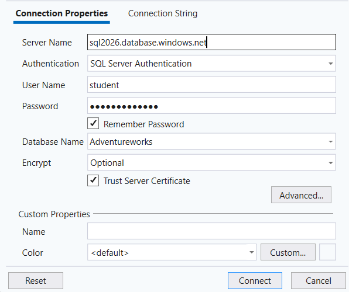

1. hét – Egyszerű SQL-lekérdezések
Gyakorlat – AdventureWorksLT
Kapcsolódás az adatbázishoz
A feladatok megoldásához kapcsolódjon az Adventureworks adatbázishoz Azure Data Studio vagy SQL Server Management Studio (SSMS) használatával. A kapcsolat létrehozásakor az alábbi adatokat adja meg.

Password12345
Az adatbázis otthonról csak Corvinus VPN-kapcsolaton keresztül érhető el. A VPN-kapcsolatot az adatbázishoz történő csatlakozás előtt hozza létre.
Cél
A gyakorlat célja az első SELECT lekérdezések elkészítése az AdventureWorksLT adatbázison. A feladatok sorrendje követi az elméleti anyagot.
A lekérdezésekben elsősorban a SalesLT.Product táblát használjuk. A gyakorlat végén a SalesLT.Customer tábla is megjelenik.
SELECT és DISTINCT
1. feladat
Listázza a SalesLT.Product tábla összes adatát! ::: {.callout-tip title=“Megoldás” collapse=“true”}
SELECT * FROM SalesLT.Product;:::
2. feladat
Listázza a termékek nevét (Name) és listaárát (ListPrice)! ::: {.callout-tip title=“Megoldás” collapse=“true”}
SELECT Name, ListPrice FROM SalesLT.Product;:::
3. feladat
Listázza a termékek azonosítóját, nevét, színét és listaárát ebben a sorrendben! ::: {.callout-tip title=“Megoldás” collapse=“true”}
SELECT ProductID, Name, Color, ListPrice FROM SalesLT.Product;:::
4. feladat
Listázza, milyen különböző színek (Color) fordulnak elő a termékek között! ::: {.callout-tip title=“Megoldás” collapse=“true”}
SELECT DISTINCT Color FROM SalesLT.Product;:::
Számított oszlopok és alias
5. feladat
Listázza a termék nevét és listaárát! A listaár oszlop jelenjen meg Price néven! ::: {.callout-tip title=“Megoldás” collapse=“true”}
SELECT Name, ListPrice AS Price FROM SalesLT.Product;:::
6. feladat
Listázza a termék nevét, listaárát és a listaár 10%-kal növelt értékét IncreasedPrice néven! ::: {.callout-tip title=“Megoldás” collapse=“true”}
SELECT Name, ListPrice, ListPrice * 1.10 AS IncreasedPrice
FROM SalesLT.Product;:::
7. feladat
Listázza a termék nevét, standard költségét és listaárát, valamint a kettő különbségét Difference néven! ::: {.callout-tip title=“Megoldás” collapse=“true”}
SELECT Name, StandardCost, ListPrice,
ListPrice - StandardCost AS Difference
FROM SalesLT.Product;:::
Szűrés – WHERE
8. feladat
Listázza azokat a termékeket, amelyek listaára nagyobb 1000-nél! ::: {.callout-tip title=“Megoldás” collapse=“true”}
SELECT Name, ListPrice FROM SalesLT.Product
WHERE ListPrice > 1000;:::
9. feladat
Listázza a fekete (Black) termékek nevét, színét és listaárát! ::: {.callout-tip title=“Megoldás” collapse=“true”}
SELECT Name, Color, ListPrice FROM SalesLT.Product
WHERE Color = 'Black';:::
10. feladat
Listázza azokat a fekete termékeket, amelyek listaára nagyobb 1000-nél! ::: {.callout-tip title=“Megoldás” collapse=“true”}
SELECT Name, Color, ListPrice FROM SalesLT.Product
WHERE Color = 'Black' AND ListPrice > 1000;:::
11. feladat
Listázza azokat a termékeket, amelyek színe fekete vagy piros (Red)! ::: {.callout-tip title=“Megoldás” collapse=“true”}
SELECT Name, Color, ListPrice FROM SalesLT.Product
WHERE Color = 'Black' OR Color = 'Red';:::
BETWEEN, IN és LIKE
12. feladat
Listázza azokat a termékeket, amelyek listaára 500 és 1000 között van! ::: {.callout-tip title=“Megoldás” collapse=“true”}
SELECT Name, ListPrice FROM SalesLT.Product
WHERE ListPrice BETWEEN 500 AND 1000;:::
13. feladat
Listázza a fekete, piros vagy kék (Blue) termékeket! Használja az IN operátort! ::: {.callout-tip title=“Megoldás” collapse=“true”}
SELECT Name, Color, ListPrice FROM SalesLT.Product
WHERE Color IN ('Black', 'Red', 'Blue');:::
14. feladat
Listázza azokat a termékeket, amelyek neve Mountain szóval kezdődik! ::: {.callout-tip title=“Megoldás” collapse=“true”}
SELECT Name, ListPrice FROM SalesLT.Product
WHERE Name LIKE 'Mountain%';:::
15. feladat
Listázza azokat a termékeket, amelyek nevében bárhol szerepel a Bike karaktersorozat! ::: {.callout-tip title=“Megoldás” collapse=“true”}
SELECT Name, ListPrice FROM SalesLT.Product
WHERE Name LIKE '%Bike%';:::
NULL értékek
16. feladat
Listázza azokat a termékeket, amelyeknél nincs megadva szín! ::: {.callout-tip title=“Megoldás” collapse=“true”}
SELECT Name, Color FROM SalesLT.Product
WHERE Color IS NULL;:::
17. feladat
Listázza azokat a termékeket, amelyeknél van megadva szín! ::: {.callout-tip title=“Megoldás” collapse=“true”}
SELECT Name, Color FROM SalesLT.Product
WHERE Color IS NOT NULL;:::
Rendezés
18. feladat
Listázza a termékek nevét és listaárát a listaár szerint csökkenő sorrendben! ::: {.callout-tip title=“Megoldás” collapse=“true”}
SELECT Name, ListPrice FROM SalesLT.Product
ORDER BY ListPrice DESC;:::
19. feladat
Listázza a termékek nevét, színét és listaárát! Rendezze az eredményt először szín, azon belül listaár szerint csökkenő sorrendbe! ::: {.callout-tip title=“Megoldás” collapse=“true”}
SELECT Name, Color, ListPrice FROM SalesLT.Product
ORDER BY Color, ListPrice DESC;:::
Egyszerű függvények
20. feladat
Listázza a termékek nevét, a név hosszát NameLength, valamint a módosítás évét ModifiedYear néven! ::: {.callout-tip title=“Megoldás” collapse=“true”}
SELECT Name, LEN(Name) AS NameLength,
YEAR(ModifiedDate) AS ModifiedYear
FROM SalesLT.Product;:::
Önálló gyakorlás
Az alábbi feladatoknál már Önnek kell kiválasztania a megfelelő SQL-eszközöket.
21. feladat
Listázza azoknak a termékeknek a nevét, színét és listaárát, amelyek színe Black, Red vagy Silver, és listaáruk legalább 1000! Az eredményt listaár szerint csökkenő sorrendben jelenítse meg! ::: {.callout-tip title=“Megoldás” collapse=“true”}
SELECT Name, Color, ListPrice FROM SalesLT.Product
WHERE Color IN ('Black', 'Red', 'Silver') AND ListPrice >= 1000
ORDER BY ListPrice DESC;:::
22. feladat
Listázza azokat a termékeket, amelyek nevében szerepel a Mountain szó! Jelenítse meg a termék nevét, listaárát és a listaár 20%-kal csökkentett értékét DiscountPrice néven! ::: {.callout-tip title=“Megoldás” collapse=“true”}
SELECT Name, ListPrice, ListPrice * 0.80 AS DiscountPrice
FROM SalesLT.Product
WHERE Name LIKE '%Mountain%';:::
23. feladat
Listázza azokat a termékeket, amelyek listaára 100 és 500 között van, és nevük L betűvel kezdődik! A név jelenjen meg nagybetűkkel is UpperName néven! ::: {.callout-tip title=“Megoldás” collapse=“true”}
SELECT Name, UPPER(Name) AS UpperName, ListPrice
FROM SalesLT.Product
WHERE ListPrice BETWEEN 100 AND 500 AND Name LIKE 'L%';:::
24. feladat
Listázza a SalesLT.Customer táblából azoknak az ügyfeleknek a keresztnevét, vezetéknevét és cégnevét, akiknek a keresztneve J betűvel vagy vezetékneve S betűvel kezdődik! Rendezze az eredményt vezetéknév, majd keresztnév szerint! ::: {.callout-tip title=“Megoldás” collapse=“true”}
SELECT FirstName, LastName, CompanyName FROM SalesLT.Customer
WHERE FirstName LIKE 'J%' OR LastName LIKE 'S%'
ORDER BY LastName, FirstName;:::
25. feladat – Challenge
Listázza azokat a Black vagy Red színű termékeket, amelyek listaára 500 és 2000 között van! Jelenítse meg nevüket, színüket, listaárukat, standard költségüket és a listaár és standard költség különbségét PriceDifference néven! Az eredményt a különbség szerint csökkenő sorrendben jelenítse meg! ::: {.callout-tip title=“Megoldás” collapse=“true”}
SELECT Name, Color, ListPrice, StandardCost,
ListPrice - StandardCost AS PriceDifference
FROM SalesLT.Product
WHERE Color IN ('Black', 'Red')
AND ListPrice BETWEEN 500 AND 2000
ORDER BY PriceDifference DESC;:::